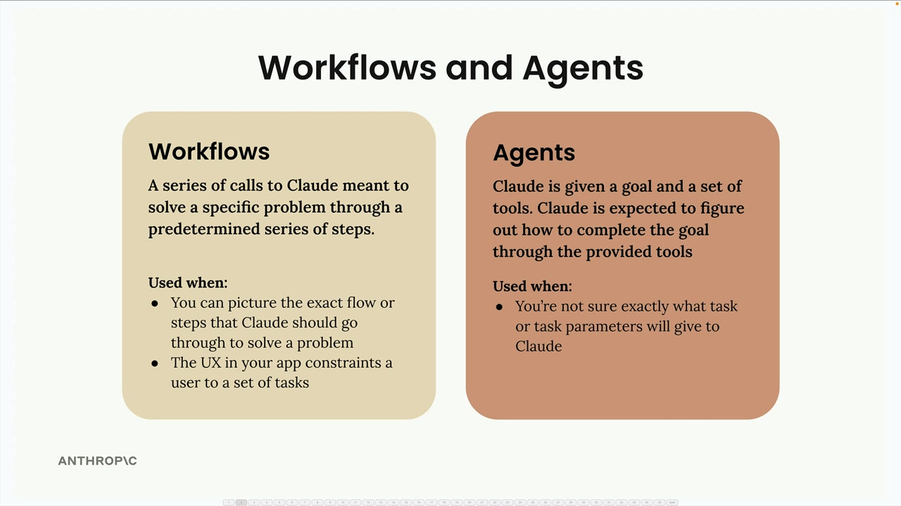
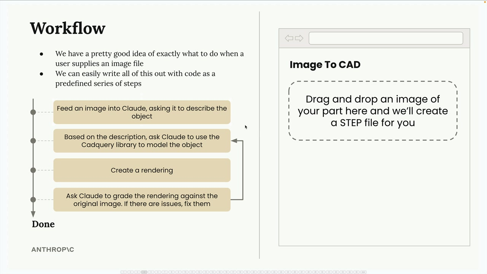
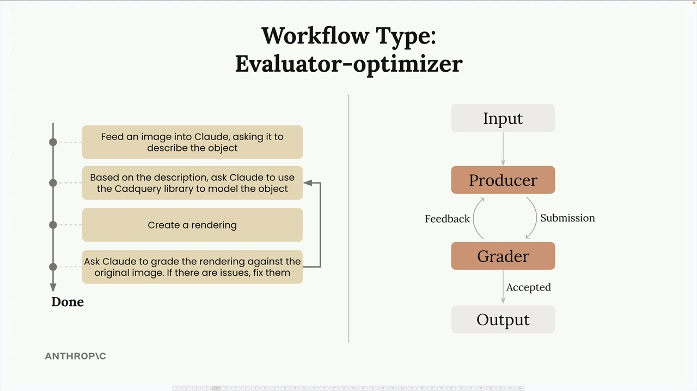

에이전트와 워크플로우
워크플로우와 에이전트는 Claude가 단일 요청으로 완료할 수 없는 사용자 작업을 처리하기 위한 전략입니다. 사실 이 코스 전반에 걸쳐 이 두 가지를 모두 만들어 왔습니다. 도구를 사용하고 Claude가 작업을 완료하는 방법을 스스로 파악하도록 했을 때, 그것이 바로 에이전트였습니다.
워크플로우 vs 에이전트: 언제 사용할까?

선택의 기준은 작업을 얼마나 잘 이해하고 있는가입니다:
- 워크플로우 사용: Claude가 문제를 해결하기 위해 거쳐야 할 정확한 흐름이나 단계를 그릴 수 있을 때, 또는 앱의 UX가 사용자를 특정 작업 집합으로 제한할 때
- 에이전트 사용: Claude에게 부여할 작업이나 작업 매개변수가 정확히 무엇인지 확실하지 않을 때
워크플로우는 미리 정해진 일련의 단계를 통해 특정 문제를 해결하기 위한 Claude 호출의 연속입니다. 에이전트는 Claude에게 목표와 도구 세트를 제공하고, Claude가 제공된 도구를 통해 목표를 완료하는 방법을 스스로 파악하도록 기대합니다.
예시: 이미지에서 CAD로 변환하는 워크플로우
실용적인 워크플로우 예시를 살펴보겠습니다. 사용자가 금속 부품 이미지를 드래그 앤 드롭하면 STEP 파일(3D 모델의 업계 표준)을 생성하는 웹 앱을 만든다고 상상해보세요.
사용자가 이미지 파일을 제공할 때 무엇을 해야 할지 꽤 정확히 알고 있고, 미리 정해진 일련의 단계로 코드를 작성할 수 있으므로 이는 완벽한 워크플로우 후보입니다.

워크플로우를 단계별로 나누면 다음과 같습니다:
- 이미지를 Claude에 입력하여 객체를 설명하도록 요청
- 설명을 바탕으로 CadQuery 라이브러리를 사용해 객체를 모델링하도록 Claude에 요청
- 렌더링 생성
- 원본 이미지와 렌더링을 비교하여 평가하도록 Claude에 요청. 문제가 있으면 수정
평가자-최적화자 패턴

이 모델링 워크플로우는 평가자-최적화자 패턴의 예입니다. 작동 방식은 다음과 같습니다:
- 생산자: 입력을 받아 출력을 생성합니다 (CadQuery를 사용해 부품을 모델링하고 렌더링을 생성하는 Claude)
- 평가자: 출력을 일정 기준에 따라 평가합니다
- 피드백 루프: 평가자가 출력을 승인하지 않으면 개선을 위해 피드백이 생산자에게 돌아갑니다
- 반복: 평가자가 출력을 승인할 때까지 사이클이 반복됩니다
워크플로우 패턴을 배우는 이유
다양한 워크플로우를 파악하는 목표는 자신만의 기능을 구현하기 위한 반복 가능한 레시피 세트를 제공하는 것입니다. 평가자-최적화자는 다른 엔지니어들에게 잘 작동한 워크플로우 패턴 중 하나입니다. 자신의 앱에도 적용해 보세요!
워크플로우를 파악하는 것 자체가 무언가를 해주지는 않습니다. 실제 코드를 작성해서 구현해야 합니다. 하지만 이러한 패턴들은 많은 엔지니어들에게 성공적으로 입증되었으므로, 이해하고 자신의 프로젝트에 적용할 가치가 있습니다.